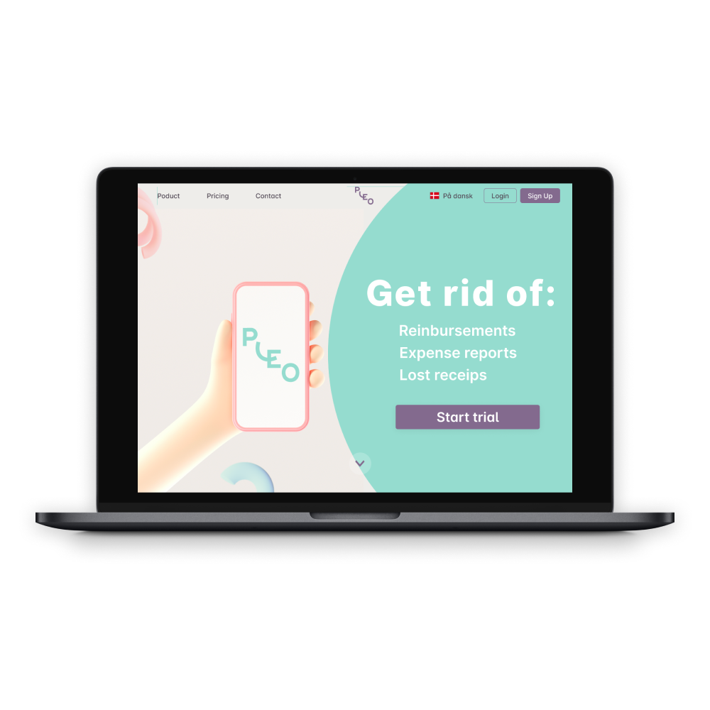
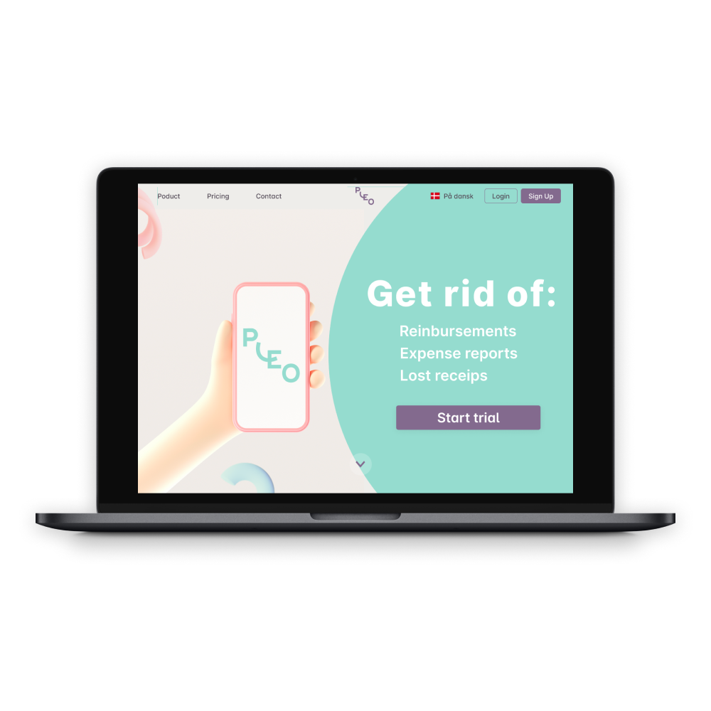

The goal of the project was to create a tool for newcomers in Denmark who are looking for job or education within the IT industry.
Tasks:
- Conducting qualitative and quantitative research
- Working on conceptualization, information architecture and
user requirements specifications
- Creating wireframes, mockups, and prototypes
- Conducting usability tests
See the project
Darinka Gordillo
Hej! I'm a UX/UI designer based in Copenhagen. Feel free to get in touch.
- 2900, Copenhagen
- +45 42683008
- dariinkagm@gmail.com
About
I'm a 25.y.o. woman from Mexico. Highly motivated and detail oriented Web development student and UX/UI designer. Keen on problem solving, teamwork and research.
I hold a B.A. in English. Besides languages and linguistics, I have a great passion for designing and Tech!
Even though I'm fond of my profession and that teaching is a highly rewarding job, during the past year, I realized I enjoyed my
time designing and coding interfaces for apps and websites.
The combination of design and tech are the perfect match for me since I consider myself a creative person with a good sense of aesthetics and a strong background in linguistics that allows
me to understand the logic behind programming languages better.
EDUCATION
- Interface design, ReDI School of Integration
04/2021 - 07/2021 Copenhagen, Denmark - Web Development, Hack Your Future
12/2020 - 07/2021 Copenhagen, Denmark - User Experience design, ReDI School of Integration
09/2020 - 12/2020 Copenhagen, Denmark - B.A. in English teaching, Universidad Autónoma de Chiapas
08/2013 - 12/2017 Chiapas, México
WORK EXPERIENCE
- Internship UX/UI designer
02/2021 - 04/2021 ReDI School of Integration. Copenhagen, Denmark
- Au pair
09/2019 - 9/2021 Copenhagen, Denmark
- Looked after children aged 2 and 4
- Cultural exchange that provided me a great insight on Danish language and culture - Au pair
08/2018 - 08/2019 Malmö, Sweden
- Looked after children aged 1 and 4
- Cultural exchange that provided me a great insight on Swedish language and culture - English as a foreign language teacher
05/2017 - 03/2018 Instituto Sor Juana Inés de la Cruz. Chiapas, Mexico
ESL teacher for children aged 6 - 10
SKILLS
- FIGMA
- Adobe XD
- HTML5
- CSS
- JavaScript
- Git
- React
- NodeJS
- MySQL
LANGUAGES
- SPANISH (Native)
- ENGLISH (Proficient)
- FRENCH (Proficient)
- SWEDISH (Intermediate)
×

PORTFOLIO
UX Cases
UI Design
 


Coding